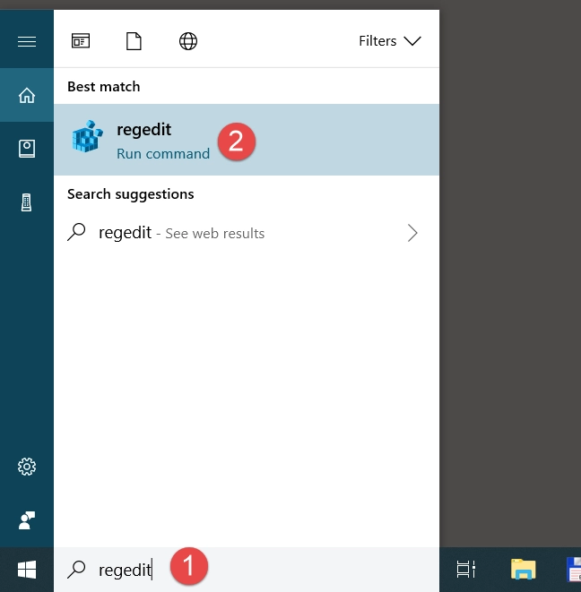
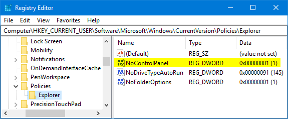

disable Windows Update on your Windows operating system. However, I would like to note that disabling Windows Update can leave your system vulnerable to security risks and may cause stability issues.
Note Note that disabling Windows Update is not recommended for most users, as it can leave your system vulnerable to security risks and can cause stability issues. It is generally better to keep your system up-to-date with the latest security and stability fixes provided by Windows Update.
Here are the steps to disable Windows Update on Windows 10:
1. Start regedit.exe on the machine where you want to disable Windows Update.
2. Go to HKEY_CURRENT_USER\Software\Microsoft\Windows\CurrentVersion\Policies\Explorer
3. From the Edit menu, select New, DWORD value.
4. Enter a name of NoWindowsUpdate, and press Enter.
5. Double-click NoWindowsUpdate, and set it to 1.
6. Close regedit.